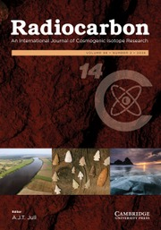

Lagoa Salgada: An Overview of a Brazilian Hypersalin Lagoon Environmental Studies

Resumo em Português
A Lagoa Salgada está localizada na planície deltaica do Rio Paraíba do Sul, no litoral do Estado do Rio de Janeiro, Brasil, e é uma das poucas lagoas no mundo com estromatólitos recentes bem desenvolvidos. Trata-se de uma lagoa hipersalina formada em um sistema ambiental muito complexo, sujeito a influências terrestres e oceânicas sob diferentes regimes de nível do mar e variações climáticas. Além disso, os sedimentos e estromatólitos são caracterizados por valores incomumente positivos de δ¹³C inorgânico (VPDB). Por essa razão, a Lagoa Salgada tem sido alvo de diversos estudos geológicos e paleoambientais, que em sua grande maioria requerem uma técnica geocronológica para determinar as mudanças ambientais ao longo do tempo.Quando a datação por radiocarbono (¹⁴C) é utilizada, é necessário considerar alguns aspectos, como a fonte de ¹⁴C no ambiente, e realizar a calibração das idades de ¹⁴C adequadamente. Neste trabalho, foi realizado um levantamento bibliográfico para revisar o tratamento dos dados e aprimorar a discussão da evolução ambiental com base em calibração precisa. Utilizando a curva Marine20 e um ΔR não determinado, foram gerados modelos de crescimento e deposição para estabelecer uma visão geral da formação desta lagoa.